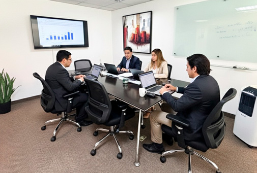

Nosotros
La Corporación Contable Fuentes y Asociados
Somos una Corporación Contable de asesoramiento empresarial, una nueva alternativa dinámica, eficiente y veraz para los empresarios más exigentes del mercado actual.
La Corporación Contable Fuentes y Asociados tiene como lema de acción: Que si Usted tiene PROBLEMAS nosotros tenemos SOLUCIONES esto hace que en todo momento busquemos un camino seguro y sin obstáculos para encontrar respuesta a cualquier problema tributario o financiero, buscando que Usted tenga un beneficio importante y que la inversión que ha efectuado en su corta o larga vida empresarial .
DetallesHistoria

La Corporación Contable Fuentes y Asociados nace en Octubre del año 1998 de la mano de su fundador C.P.C. Luigi Fuentes Varea, Contador de vocación; y su grupo de trabajo, profesionales especialistas en el área contable, tributario, laboral y financiero
Ser una corporación contable de prestigio, reconocida por el cumplimiento de compromisos, la calidad del servicio, el profesionalismo, la ética y la mejora continua.
Brindar soluciones contables y administrativas a través de un equipo profesional comprometido con la excelencia, orientado a satisfacer las necesidades de desarrollo estructural y operativo de nuestros clientes: empresas unipersonales, sociedades, asociaciones sin fines de lucro, fundaciones, constructoras, tec.
Valores
- Trabajo en equipo y respeto por las personas.
- Transparencia, rectitud y ética profesional.
- Ofrecer permanentemente las mejores soluciones administrativas
- Vocación de servicio y cumplimiento de los requisitos del cliente.
- Sentido de pertenencia y compromiso interno.
- Atención personalizada y enfoque en relaciones de largo plazo.
- Flexibilidad organizacional para adaptarse a las necesidades del cliente.
- Buscamos mantener relaciones de largo plazo entre contador público y cliente
- Bienestar sostenido para empleados y toda la cadena de valor, con visión de futuro./a>